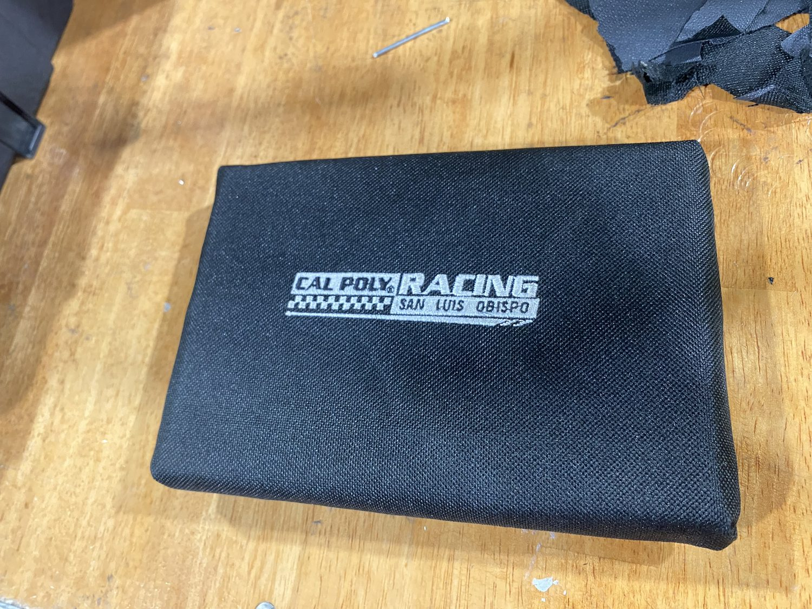
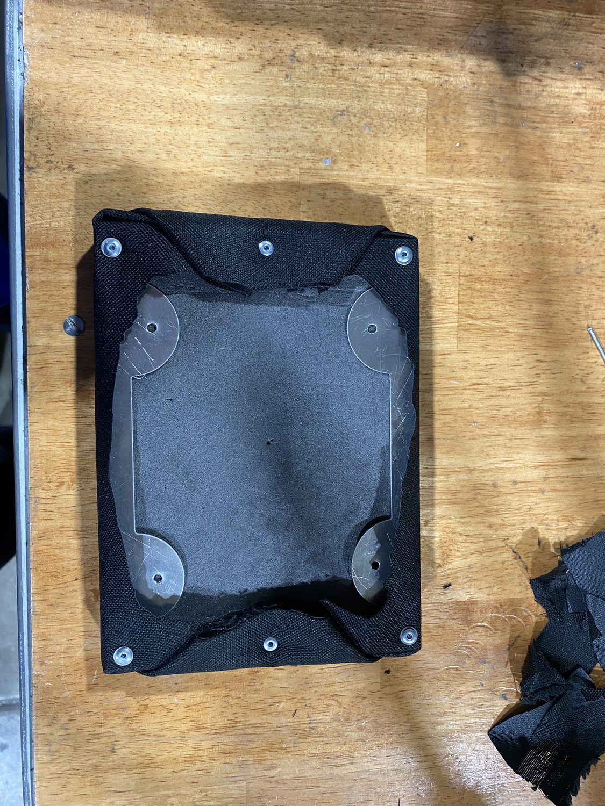
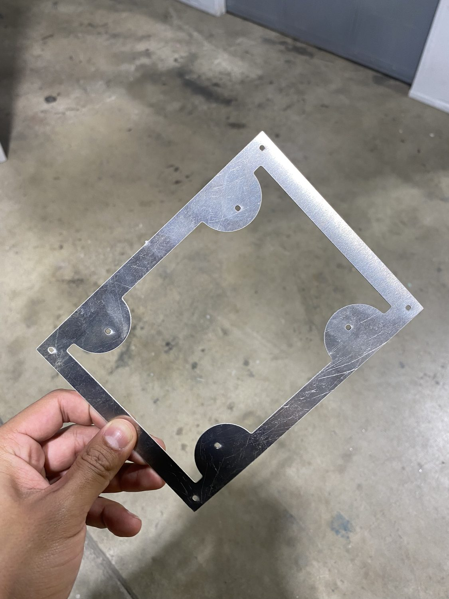
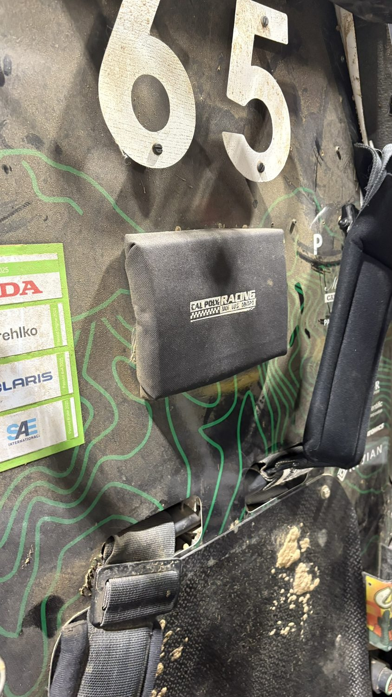
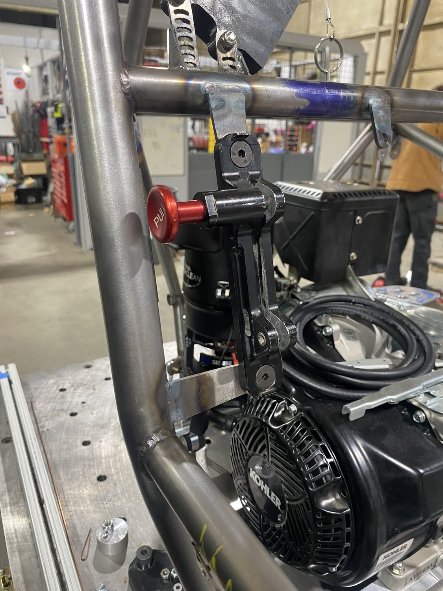

PROJECT 08 / 11 · Baja SAE · Safety
Fire Ext. Tabs & Headrest
Safety-critical hardware for the Baja car, headrest and fire-extinguisher mounting tabs waterjet from chromoly and aluminum.
PartsHeadrest · fire-ext tabs
HeadrestSFI foam · Al backplate
Tabs0.125″ 4340 chromoly
ProcessWaterjet · weld
InspectionFirst through tech
Overview
Tech inspection scrutinizes driver-safety hardware against SFI and SAE requirements, so these were built to submittal-level models and checked for fitment. The headrest is SFI foam upholstery on an aluminum backplate cut by waterjet.
The fire-extinguisher mounting tabs were waterjet from 0.125″ 4340 chromoly steel and welded to the chassis. Cal Poly Racing was the first team through technical inspection with no safety concerns at the 2025 Baja SAE competition.
Highlights
- SFI foam headrest on a waterjet aluminum backplate
- Fire-extinguisher tabs waterjet from 0.125″ 4340 chromoly
- Welded to the chassis, built to SFI / SAE requirements
- First team through tech inspection, no safety concerns
Gallery / 05 frames




